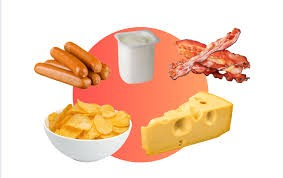
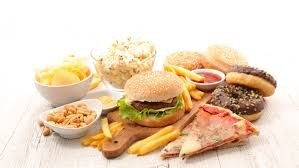

CONHECENDO OS ALIMENTOS: DO NATURAL AOS INDUSTRIALIZADOS
ALIMENTOS PROCESSADOS Os alimentos processados são aqueles que passaram por alguma modificação industrial antes de serem consumidos. Geralmente, recebem ingredientes como sal, açúcar, óleo ou conservantes para aumentar o tempo de duração ou melhorar o sabor. Mesmo sendo modificados, eles ainda mantêm parte do alimento original. Alguns exemplos de alimentos processados são
Os ingredientes mais adicionados nos alimentos processados são sal, açúcar, óleo, conservantes e corantes. Esses ingredientes ajudam na conservação e no sabor dos produtos. A diferença entre os alimentos processados e os alimentos in natura é que os in natura são consumidos praticamente como vêm da natureza, sem alterações industriais, como frutas, verduras e legumes. Já os processados passam por mudanças e recebem ingredientes adicionais durante a fabricação. Por isso, os alimentos in natura costumam ser mais saudáveis quando consumidos com frequência.

